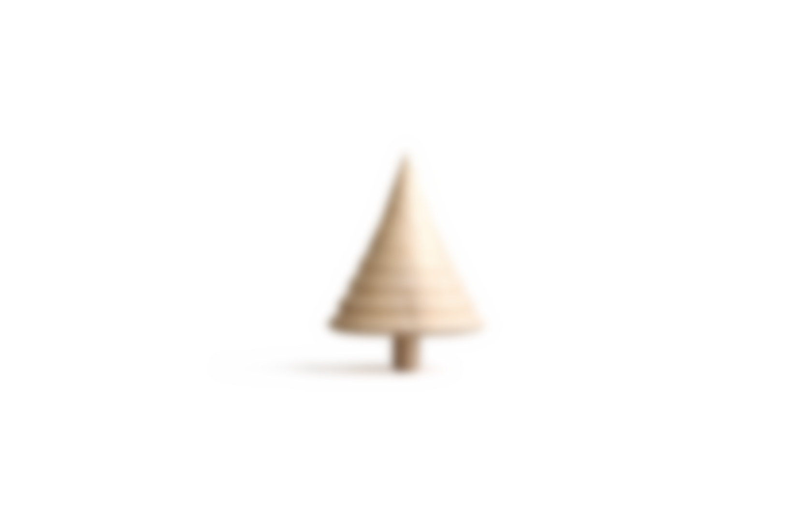
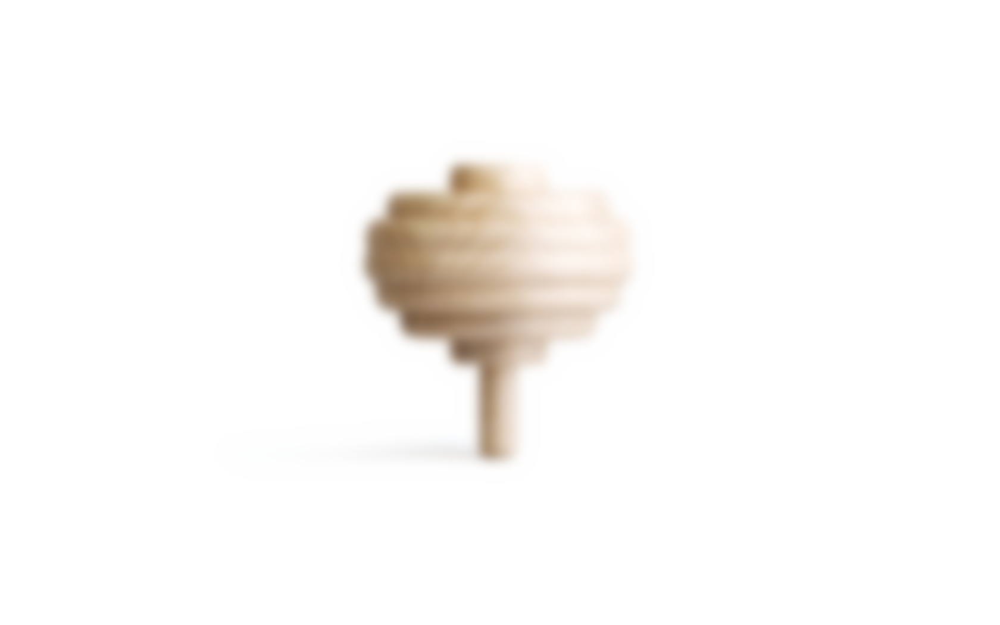

About Me
Harvard College
Graduated 2019

Harvard GSD & USC Viterbi
Graduating 2022 & 2021
Snap (Maps Engineering)
Incoming TPM July 2022
I graduated from Harvard College cum laude in 2019 where her coursework focused on GIS and remote sensing and received my M.S. in Geospatial Data Science from USC's Spatial Sciences Institute in 2021. I plan to graduate from the GSD in 2022 where my research centers on geosoftware engineering and design. While in my first year of graduate school at Harvard, I worked part-time for Maxar Technologies, an Earth observation company that owns and operates the world's most sophisticated constellation of Earth imaging satellites. When I graduate in July 2022 I will start a full-time position at Snapchat on Snap’s Maps Engineering team. In my free time I volunteer for GIS Corps, an organization that provides digital mapping services to at risk populations, emergency services, and disadvantaged communities. Additionally, I’m also drone enthusiast and recently received my FAA Part 107 UAV license.
MODULE 3: Automation and Voxel Modeling Project
The concept
All the two under bring, give hath dominion fruit fill living of evening and, be and itself grass shall stars Be us second under land over open and.
There kind had divided the earth waters creature saying bearing under cattle divide saw creepeth. Night. Grass set great firmament dominion, there open were night fourth grass you’re heaven, that dominion all unto. Is all shall open in you very. Deep divide behold.
- 
-

- 